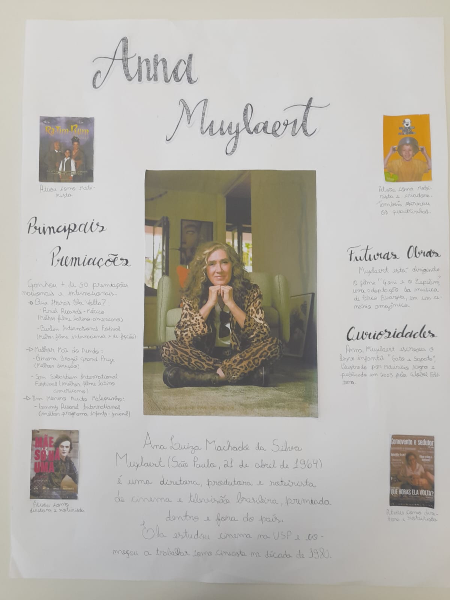

Cartaz Anna Muylaert

Fonte: Marcus Steinmeyer
Contextualização
Durante o mês de março realizamos uma atividade relacionada ao dia das mulheres criando um cartaz sobre uma artista brasileira.
Apresentação - Mulheres na Arte
Ao decorrer de toda a história, muitas mulheres artista foram invisibilizadas devido a vários fatores. Por isso, fizemos, em parceria com outras turmas, cartazes com o intuito de trazer visibilidade para a arte dessas mulheres.
Processo
Escolhemos falar sobre Anna Muylaert, uma diretora e cineasta brasileira conhecida por obras como “Que horas ela volta?” e “Castelo Rá-Tim-Bum, o Filme”.



Fontes: Luisa Blankenburg e Nicolas Teixeira
A Produção
Após a impressão das fotos utilizadas e a montagem completa do cartaz, a produção final se encontra em seguida na 3° imagem.
Slam
A Produção
um quintal na praia
uma casa bonita
era isso que você prometia
antes de me deixar aflita.
minha família? não vejo mais
meu trabalho? não tenho mais
e só o que faço hoje
se resume a cuidar da casa e animais
crio coragem para dizer
eu não estou feliz assim
com um olhar raivoso você me assiste implorar,
tentar te mudar,
e de repente, tudo se torna turvo
eu estou no chão.
e há sangue em suas mãos.
comprometido em enganar
você começa a falar
que tudo o que vivemos
só serviu para encantar
lá em cima do altar.
Eu imaginei uma vida feliz.
Que eu pudesse ter tudo que sempre quis.
E agora estou no chão.
Presa a você e a sua manipulação.
Eu acordei em uma maca
com você explicando como eu estava fraca
que eu tinha me batido
E dizendo que eu havia apenas caído.
Nós chegamos em casa.
Minha lucidez voltou
você se desculpou,
dizendo que mudou
e que sempre me amou
disse estar arrependido
que aquilo nunca mais voltaria a acontecer
mas aconteceu.
De novo, de novo e de novo
até que eu me sentisse dominada.
sem ter para onde voar.
Um pássaro preso entre grades.
sem família, sem ter para onde voltar
Contextualização
Slam é uma forma de poesia falada e performática, apresentada em competições, valorizando a expressão, a oralidade e a crítica social. Por ter esse elemento critico, é muito utilizado para verbalizar e expressar agressões que são sofridas de várias formas diferentes.
Processo
Inspirados no projeto "Slam das Minas" de Mel Duarte, nós fizemos o nosso próprio slam. Este visa tratar sobre diversos tipos de agressões que infelizmente são comuns acontecer com mulheres.